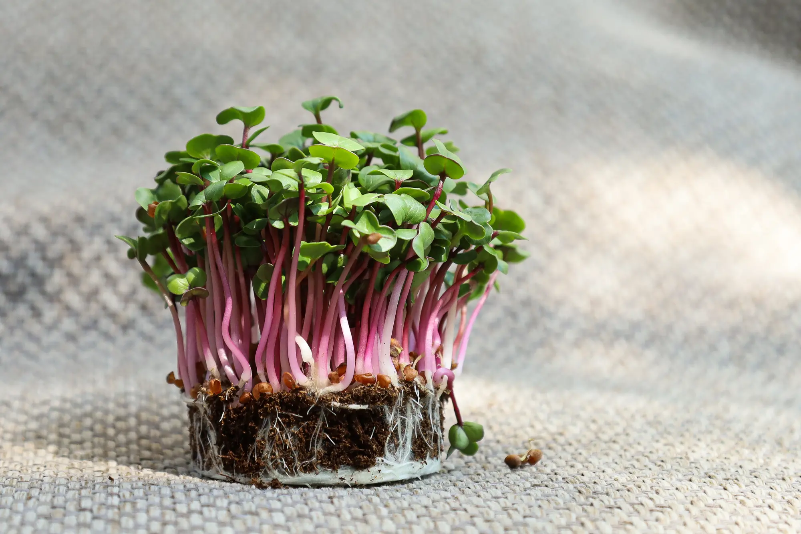

Данный вид микрогрина является источником множества полезных
для здоровья веществ. Он включает в себя витамины группы В, К, А,
аскорбиновую кислоту, цинк, калий, натрий, марганец, магний, железо,
кальций и некоторые другие полезные соединения.
Польза и вред молодых ростков редиса во многом зависит от условий
их выращивания, качества семян, а также состояния здоровья человека.
Качественная микрозелень редиса, при отсутствии у человека хронических
заболеваний органов пищеварения, принесет исключительно пользу для организма.